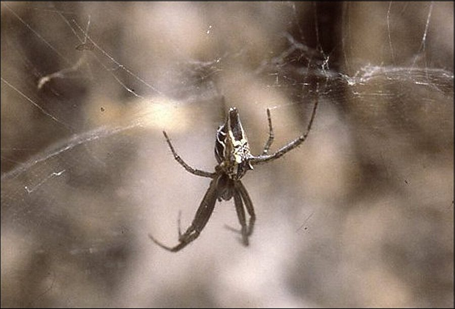

बाग़ीचा तंबू-जाला मकड़ीGarden Tent-web Spider
Cyrtophora cicatrosa · Araneidae · SPD-0048

- Scientific name वैज्ञानिक नाम
- Cyrtophora cicatrosa (Stoliczka, 1869)
- Family कुल
- Araneidae
- Hindi हिंदी
- बाग़ीचा तंबू-जाला मकड़ी
- Local names स्थानीय नाम
- garden tent-web spider, tent spider, cyrtophora cicatrosa
- Status here यहाँ की स्थिति
- native
- Movement आवागमन
- Resident, here all year
- Known from कहाँ दर्ज
- Others have published records from the wider Awadh–Purvanchal plain, none yet from Basti–Ayodhya अवध–पूर्वांचल से दूसरों के प्रकाशित अभिलेख, बस्ती–अयोध्या से अभी नहीं
- IUCN IUCN
- not evaluated
- Review समीक्षा
- not yet reviewed
When to look कब देखें
Present all year. साल भर मौजूद।
Tell it apart from इनसे अलग पहचानें
बाग़ीचा तंबू-जाला मकड़ी / Garden Tent-web Spider
Cyrtophora cicatrosa (Stoliczka, 1869) — Araneidae
बाग़ीचा तंबू-जाला मकड़ी — बागों और झाड़ियों में पाई जाने वाली एक अनूठी मकड़ी, जिसके पेट पर दो जोड़े कूबड़ होते हैं और जो गैर-चिपचिपा तंबूनुमा (गुंबदनुमा) जाला बनाकर उसके नीचे उल्टी लटकी रहती है।
Quick Identification त्वरित पहचान
| Feature | Description |
|---|---|
| Abdomen structure | Elongated, tapering posteriorly, bearing two pairs of distinct conical shoulder and dorsal tubercles |
| Coloration | Greyish-green to brownish-white speckled with fine black dots and white blotches |
| Web architecture | Complex non-sticky horizontal dome or tent-like sheet web with a dense maze of barrier threads |
| Egg chain | Constructs a vertical bead-like string of disc-shaped pale green or brownish egg sacs above the hub |
| Resting posture | Hangs inverted beneath the central apex of the horizontal dome web |
Small, distinctive tent-web spider with an elongated abdomen characterized by two pairs of conical humps or tubercles on the dorsum, tapering down to a blunt tip. Body coloration is pale greyish-green to mottled yellowish-brown with black and white flecks. It weaves an intricate, non-sticky horizontal tent-like mesh sheet suspended beneath a tangled maze of barrier silk lines, resting upside-down beneath the apex.
हिंदी: कूबड़दार पेट वाली छोटी मकड़ी जिसके पेट पर चार छोटे उभार होते हैं। यह गैर-चिपचिपा तंबूनुमा जाला बनाती है और अपने जाले के ऊपर अंडों की थैलियों की एक लंबी लड़ी (माला) लटका कर रखती है।
Morphology शारीरिक संरचना
| Feature | Description | Source |
|---|---|---|
| Abdominal tubercles | Two pairs of distinct conical tubercles (one anterior shoulder pair, one median dorsal pair) | Tikader (1982) |
| Web silk type | Non-sticky dry silk forming an extremely fine, dense horizontal mesh sheet | Sebastian & Peter (2009) |
The female has an elongated abdomen that tapers posteriorly beyond the spinnerets into a blunt cone. The dorsal surface features two pairs of conspicuous conical humps: an anterior pair near the shoulders and a second pair situated medially. The background coloration is pale olive-grey, mottled with chalky-white patches, dark brown reticulations, and tiny black dots. The cephalothorax is yellowish-brown, flattened, and covered with short silky hairs. The eyes are small, with the median eyes forming a square on a slight tubercle. Legs are yellowish-brown, banded with dark brown, relatively short and stout. The male is dwarfed (less than half the female's length), lacking prominent tubercles, with a compact oval abdomen and swollen pedipalps.
हिंदी: पेट पर आगे और बीच में दो-दो छोटे कूबड़ होते हैं। शरीर का रंग जैतूनी-स्लेटी और चित्तीदार होता है। नर बहुत छोटा होता है।
Behaviour & Ecology व्यवहार एवं पारिस्थितिकी
A sedentary web-dweller that frequently forms loose colonial aggregations where dozens of individual tent webs are interconnected by shared barrier threads across tree branches. The web consists of a finely woven, non-sticky horizontal dome or inverted bowl of dry silk, supported above and below by a tangled labyrinth of arrestor threads. Flying insects strike the maze threads and tumble onto the horizontal dome; the spider, clinging upside-down below, bites through the sheet to paralyze the prey and pull it through. The spider never leaves the web, relying on its permanent structure for months.
हिंदी: यह बागों में एक ही पेड़ पर कई मकड़ियों के साथ मिलकर जाले का बड़ा जाल बनाती है। उड़ते कीड़े ऊपर के रेशम से टकराकर नीचे तंबू पर गिरते हैं, जहां नीचे से यह उन्हें काटकर अपने पास खींच लेती है।
Life Cycle / Phenology जीवन चक्र एवं फेनोलॉजी
Breeding takes place predominantly from July to November following the onset of monsoon rains (Tikader 1982). Males inhabit the periphery of female webs, cautiously approaching the hub to mate. After fertilization, the female constructs unique disc-shaped or lenticular egg sacs made of tough pale green or bluish-green silk (Sebastian & Peter 2009). Each egg sac holds 30 to 60 eggs (Tikader 1982). She stacks these egg sacs vertically one below the other, forming a continuous bead-like string of 3 to 6 sacs suspended directly above the web hub (Tikader 1982). The female guards this string constantly until spiderlings emerge (Tikader 1982).
हिंदी: मादा हरे या नीले रंग की चपटी अंडा थैलियां बनाकर उन्हें जाले के ऊपर एक के नीचे एक लड़ी के रूप में पिरोती है, जिसमें 3 से 6 थैलियां होती हैं (Tikader 1982)। प्रत्येक थैली में 30 से 60 अंडे होते हैं (Tikader 1982)।
Host Plants or Prey आहार एवं शिकार
Insectivorous predator capturing a wide range of small flying insects that navigate between orchard branches. Regular prey consists of citrus psyllids, aphids, fruit flies, small mosquitoes, whiteflies, micro-lepidopteran moths, and small beetles. Because its dry silk web is durable and does not degrade in rain or dust, it catches insects continuously day and night.
हिंदी: इसका मुख्य भोजन नींबू के सिल्ला, माहू, फलों की मक्खियां, छोटे मच्छर और उड़ने वाले कीड़े हैं। इसका जाला सूखा होने के कारण बारिश और धूल में भी खराब नहीं होता और लगातार कीड़ों को फंसाता रहता है।
Predators / Natural Enemies प्राकृतिक शत्रु एवं शिकारी
Major predators include spider-hunting pompilid wasps, mantises, and birds such as the Purple Sunbird (Cinnyris asiaticus) and tailorbirds. Parasitic ichneumonid wasps frequently target the exposed string of egg sacs, inserting their ovipositors through the silk to parasitize spider eggs. The spider's mottled greenish-grey body and tubercular shape mimic bird droppings or dried plant debris, providing effective camouflage.
हिंदी: परजीवी ततैया इसके अंडों की थैली में अपने अंडे देकर उन्हें नष्ट कर देते हैं। शकरखोरा और दर्जी चिड़िया वयस्क मकड़ियों को जाले से चुन लेते हैं। इसका चित्तीदार रंग पक्षी की बीट जैसा दिखता है जिससे यह बचती है।
Agricultural / Human Relevance कृषि एवं मानव उपयोगिता
Extremely beneficial in citrus, mango, and pomegranate orchards across northern India. By constructing long-lasting permanent web colonies, it provides continuous biological control of destructive citrus psyllids (vectors of citrus greening disease) and fruit flies. The webs do not damage plant foliage or fruits, and the spider is completely non-venomous and harmless to humans.
हिंदी: यह नींबू, आम और अनार के बागों में सिल्ला और मक्खियों जैसे भयंकर कीटों का प्राकृतिक रूप से खात्मा करती है। यह किसानों की एक शांत और वफादार मित्र है जो बिना किसी जहर के कीट नियंत्रण करती है।
Expected Locally क्षेत्रीय संभावना
Not a field record. Written from published accounts for eastern Uttar Pradesh. No confirmed local sighting yet — if you have seen it, that is what the atlas needs.
अभी तक स्थानीय पुष्टि नहीं। यह विवरण प्रकाशित स्रोतों से है, किसी अवलोकन से नहीं।
GBIF holds published records across the Gangetic plain from orchard and garden landscapes of Uttar Pradesh. It is expected on citrus, guava, and mango trees in orchards, village courtyards, and riverine fruit gardens along the Ghaghara and Kuwana river basins. A confirmed local record requires a clear photograph showing the tubercular abdomen, horizontal tent-web, or the distinctive vertical string of egg sacs with date and location details.
हिंदी: यह पूर्वी उत्तर प्रदेश के नींबू और आम के पुराने बागों में संभावित है। पुष्टि के लिए कूबड़दार पेट, तंबूनुमा जाला या अंडों की खड़ी लड़ी दर्शाने वाली स्पष्ट तस्वीर आवश्यक है।
Distribution वितरण
Widely distributed across South and Southeast Asia, from India and Sri Lanka through Myanmar, Thailand, and Malaysia to Indonesia and the Philippines. In India, it is recorded across northern, eastern, and southern agroecosystems.
हिंदी: यह भारत, श्रीलंका और पूरे दक्षिण-पूर्व एशिया में पाई जाती है। भारत के सभी मैदानी और तराई भागों में यह बागों और उद्यानों में सामान्य रूप से पाई जाती है।
Research Questions शोध प्रश्न
- What is the seasonal predation impact of Cyrtophora cicatrosa colonies on the population dynamics of citrus psyllids (Diaphorina citri)?
- How do communal colony associations affect individual foraging success and web maintenance energy expenditure?
- What proportion of egg sacs in vertical strings are successfully parasitized by chalcidoid or ichneumonid wasps?
- What architectural properties allow the dry, non-sticky silk mesh of the tent dome to retain tensile strength through the monsoon?
- क्या बागों में इस मकड़ी की कॉलोनियों से नींबू के पेड़ों में सिल्ला कीट का प्रकोप काफी कम हो जाता है?
- क्या अंडों की लड़ी में सबसे ऊपर वाले अंडे ततैयों के परजीवी हमलों से अधिक प्रभावित होते हैं?
Similar Species समान प्रजातियाँ
| Similar species | Distinction | Hindi distinction | |
|---|---|---|---|
| Tropical Tent-web Spider \ | Cyrtophora citricola | Much larger size; abdomen carries three pairs of large bifurcated tubercles and bold black-and-white folium | ट्रॉपिकल टेंट-वेब मकड़ी काफी बड़ी होती है और इसके पेट पर तीन जोड़े बड़े कांटेदार कूबड़ होते हैं |
| Kidney Garden Spider \ | Araneus mitificus | Pale apple-green smooth abdomen with a dark kidney-shaped patch; builds standard sticky vertical orb web | किडनी गार्डन मकड़ी का पेट हल्का हरा, चिकना और गुर्दे जैसे काले धब्बे वाला होता है |
| Signature Spider \ | Argiope anasuja | Pentagonal banded abdomen; builds flat vertical orb web with X-shaped white stabilimentum | सिग्नेचर मकड़ी का पेट चपटा पंचकोणीय होता है और यह सपाट जाले पर सफेद X बनाती है |
Field rule: Small grey-green spider with two pairs of abdominal humps; weaves non-sticky tent-dome web with vertical string of egg sacs.
हिंदी: चार कूबड़ वाला स्लेटी-हरा पेट, गैर-चिपचिपा तंबूनुमा जाला और जाले के ऊपर अंडों की लटकती लड़ी वाली छोटी मकड़ी।
Taxonomy & Classification वर्गिकी एवं वर्गीकरण
Original description. Stoliczka (1869), Contribution towards the knowledge of Indian Arachnoidea, Journal of the Asiatic Society of Bengal, 38(4), p. 242; type locality: Calcutta, India.
Subspecies. Monotypic species recognized across its Asian range.
Family and order placement. Placed in the orb-weaver family Araneidae, order Araneae, class Arachnida.
IUCN status rationale. Not evaluated by the IUCN Red List; common and widespread throughout South Asian orchard and scrub habitats.
हिंदी: फर्डिनेंड स्टोलिक्ज़का ने 1869 में कलकत्ता से इसका पहला वैज्ञानिक विवरण दिया था। यह अरानेइडे कुल की सदस्य है और बागों में पाई जाती है।
Photo Gallery फोटो गैलरी
No photos yet — add field photos to media/species/garden_tent_web_spider/ and run node scripts/sync_photos.js.
Photos needed आवश्यक फोटो
- [ ] Female hanging inverted under horizontal tent-dome web showing two pairs of abdominal tubercles (तंबूनुमा जाले में उल्टी लटकी मादा के कूबड़दार पेट का स्पष्ट दृश्य)
- [ ] Vertical bead-like string of pale green disc-shaped egg sacs above the web hub (जाले के केंद्र के ऊपर लटकती हरी अंडा थैलियों की लड़ी का क्लोज-अप)
- [ ] Male showing miniaturized body size near the web perimeter (जाले के किनारे बैठे छोटे नर का स्पष्ट दृश्य)
- [ ] Complete horizontal tent web architecture showing upper barrier maze threads (ऊपरी भूलभुलैया रेशम और क्षैतिज तंबू जाले का संपूर्ण विहंगम दृश्य)
- [ ] Colony of multiple interconnected webs in a citrus or guava tree (नींबू या अमरूद के पेड़ पर कई जालों की जुड़ी हुई कॉलोनी)
- [ ] Close-up of spider biting prey through the dry horizontal sheet web (सूखे जाले के नीचे से शिकार को दबोचती मकड़ी का दृश्य)
- [ ] Macro view of cephalothorax showing eye arrangement and chelicerae (सिर पर आंखों के क्रम और जबड़ों का क्लोज-अप दृश्य)
- [ ] Dense aggregation of interconnected webs in hedgerow (झाड़ियों में आपस में जुड़े जालों की घनी बस्ती)
References संदर्भ
- Original description: Stoliczka, 1869 — see GBIF.
- Tikader, B. K. (1982). Fauna of India: Araneae: Vol. II: Araneidae and Gnaphosidae. Zoological Survey of India, Calcutta.
- Sebastian, P. A. & Peter, K. V. (2009). Spiders of India. Universities Press, Hyderabad.
- GBIF Occurrence Data — Cyrtophora cicatrosa, India (2025).
Source file: species/fauna/spiders/garden_tent_web_spider.md